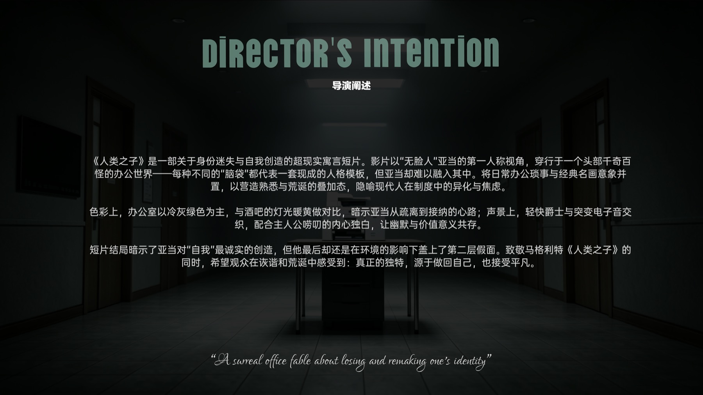
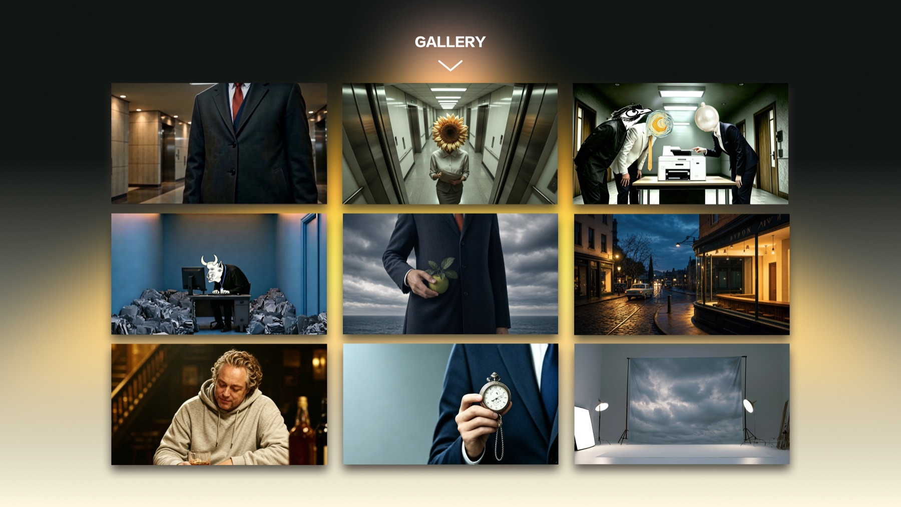
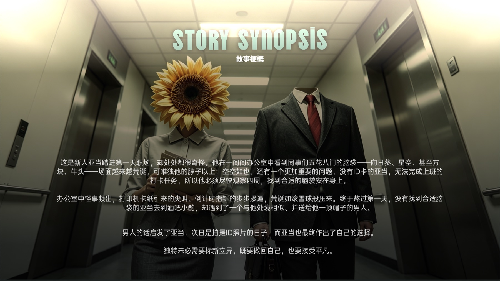
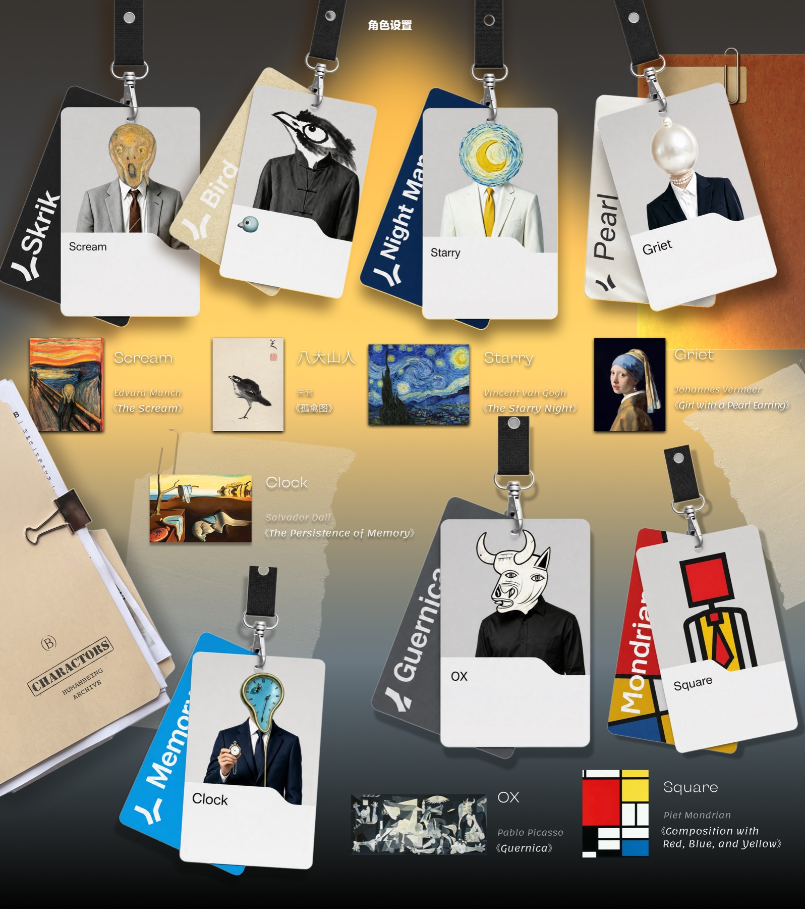
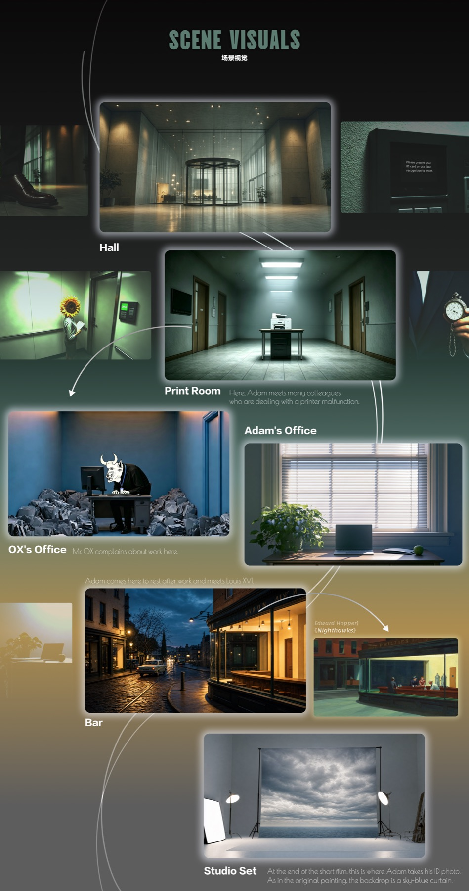
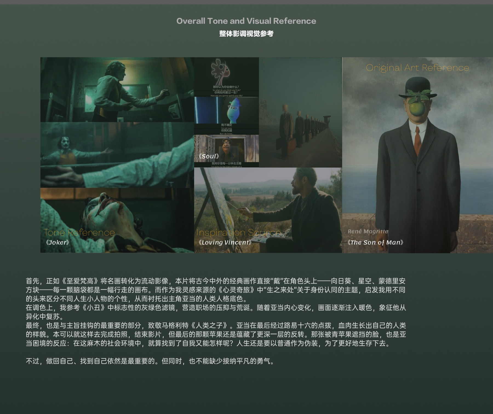
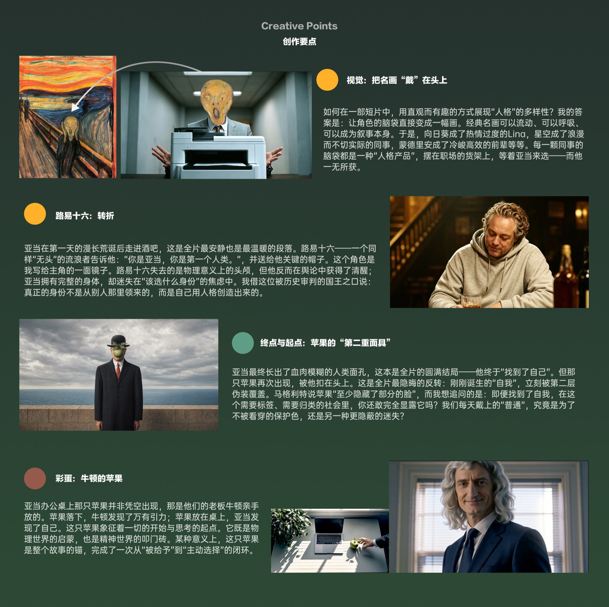
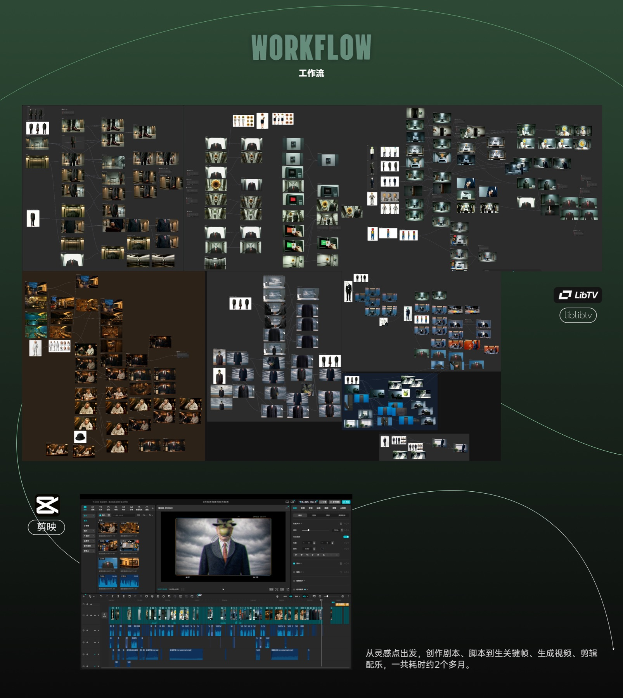

THE SON OF MAN / DIRECTOR’S INTENTION完整导演阐述
《人类之子》 · 毕涵昱 · 原稿共 11 页
01 / 11 导演阐述查看原图 ↗
02 / 11 画廊查看原图 ↗
03 / 11 故事梗概查看原图 ↗
04 / 11 角色设置 · Adam查看原图 ↗
05 / 11 角色设置 · Lina查看原图 ↗
06 / 11 角色设置 · 其他角色查看原图 ↗
07 / 11 角色设置 · Louis XVI查看原图 ↗
08 / 11 场景视觉查看原图 ↗
09 / 11 整体影调视觉参考查看原图 ↗
10 / 11 创作要点查看原图 ↗
11 / 11 工作流查看原图 ↗
← 返回影片介绍